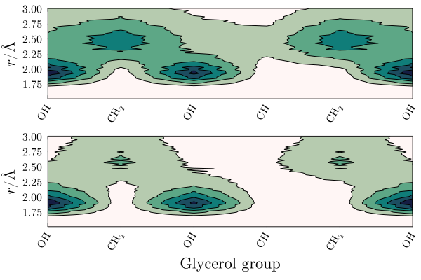

Glycerol/water mixture
This example illustrates the use of ComplexMixtures.jl to study the solution structure of a crowded (1:1 molar fraction) solution of glycerol in water. Here, we compute the distribution function and atomic contributions associated to the inter-species interactions (water-glycerol) and the glycerol-glycerol auto-correlation function. This example aims to illustrate how to obtain a detailed molecular picture of the solvation structures in an homogeneous mixture.
The system simulated consists of 1000 water molecules (red) and 1000 glycerol molecules (purple).

Index
- Data, packages, and execution
- Glycerol-Glycerol and Water-Glycerol distribution functions
- Glycerol group contributions to MDDFs
- 2D map of group contributions
Data, packages, and execution
The files required to run this example are:
- equilibrated.pdb: The PDB file of the complete system.
- traj_Glyc.dcd: Trajectory file. This is a 200Mb file, necessary for running from scratch the calculations.
To run the scripts, we suggest the following procedure:
- Create a directory, for example
example4. - Copy the required data files above to this directory.
- Launch
juliain that directory: activate the directory environment, and install the required packages. This launching Julia and executing:import Pkg Pkg.activate(".") Pkg.add(["ComplexMixtures", "PDBTools", "Plots", "LaTeXStrings", "EasyFit"]) exit() - Copy the code of each script in to a file, and execute with:
Alternativelly (and perhaps preferrably), copy line by line the content of the script into the Julia REPL, to follow each step of the calculation.julia -t auto script.jl
Glycerol-Glycerol and Water-Glycerol distribution functions
The first and most simple analysis is the computation of the minimum-distance distribution functions between the components of the solution. In this example we focus on the distributions of the two components relative to the glycerol molecules. Thus, we display the glycerol auto-correlation function, and the water-glycerol correlation function in the first panel of the figure below. The second panel displays the KB integrals of the two components computed from each of these distributions.
Complete example code: click here!
import Pkg;
Pkg.activate(".");
using PDBTools
using ComplexMixtures
using Plots
using LaTeXStrings
using EasyFit: movavg
# Load a PDB file of the system
system = readPDB("./equilibrated.pdb")
# The full trajectory file is available at:
# https://www.dropbox.com/scl/fi/ag7k2d7i9d7ivbd5zmtl9/traj_Glyc.dcd?rlkey=93i31a5ytlzb34ulzjz315eyq&dl=0
trajectory_file = "./traj_Glyc.dcd"
# Select the atoms corresponding to glycerol and water (using PDBTools)
glyc = select(system, "resname GLLM")
water = select(system, "water")
# Compute Glycerol-Glycerol auto correlation mddf
solute = AtomSelection(glyc, natomspermol=14)
trajectory = Trajectory(trajectory_file, solute) # solute and solvent are the same
# We define a large solute domain (large dbulk) to obtain a good convergence
# for the KB integral. The mddf converges at much shorter distances.
options = Options(bulk_range=(20.0, 25.0))
mddf_glyc = mddf(trajectory, options)
# Save results for later analysis
save(mddf_glyc, "./mddf_glyc.json")
# Compute water-glycerol mddf
solvent = AtomSelection(water, natomspermol=3)
trajectory = Trajectory(trajectory_file, solute, solvent)
mddf_glyc_water = mddf(trajectory, options)
# Save results for later analysis
save(mddf_glyc_water, "./mddf_glyc_water.json")
#
# Plot the MDDFs
#
Plots.default(
fontfamily="Computer Modern",
linewidth=2,
framestyle=:box,
grid=false,
label=nothing,
)
scalefontsizes();
scalefontsizes(1.3)
plot(layout=(2, 1))
# glycerol-glycerol auto correlation
x = mddf_glyc.d # distances
y = movavg(mddf_glyc.mddf, n=10).x # the mddf (using movavg to smooth noise)
plot!(x, y, label="Glycerol-Glycerol", subplot=1)
# water-glycerol correlation
x = mddf_glyc_water.d
y = movavg(mddf_glyc_water.mddf, n=10).x
plot!(x, y, label="Glycerol-Water", subplot=1)
plot!(ylabel="MDDF", xlim=(1.5, 8), subplot=1)
# Plot the KB integrals
# glycrerol-glycerol
y = movavg(mddf_glyc.kb, n=10).x
plot!(x, y, subplot=2)
# water-glycerol
y = movavg(mddf_glyc_water.kb, n=10).x
plot!(x, y, subplot=2)
# plot settings
plot!(
xlabel=L"\textrm{Distance / \AA}",
ylabel=L"\textrm{KB~/~cm^3~mol^{-1}}",
xlim=(0, 20),
subplot=2
)
# Save plot
savefig("./mddf_kb.png")
println("Plot saved to mddf_kb.png")
Both water and glycerol form hydrogen bonds with (other) glycerol molecules, as indicated by the peaks at ~1.8$\mathrm{\AA}$. The auto-correlation function of glycerol shows a more marked second peak corresponding to non-specific interactions, which (as we will show) are likely associated to interactions of its aliphatic groups.
The KB integrals in the second panel show similar values water and glycerol, with the KB integral for water being slightly greater. This means that glycerol molecules are (sightly, if the result is considered reliable) preferentially hydrated from a macroscopic standpoint.
Glycerol group contributions to MDDFs
Complete example code: click here!
import Pkg;
Pkg.activate(".");
using PDBTools
using ComplexMixtures
using Plots
using LaTeXStrings
using EasyFit: movavg
# Load a PDB file of the system
system = readPDB("./equilibrated.pdb")
# Select the atoms corresponding to glycerol and water (using PDBTools)
glyc = select(system, "resname GLLM")
water = select(system, "water")
# Load previously computed mddfs
mddf_glyc = load("./mddf_glyc.json")
mddf_glyc_water = load("./mddf_glyc_water.json")
# Plot some group contributions to the MDDF. We select the atom names
# corresponding to each type of group of the glycerol molecule.
hydroxyls = ["O1", "O2", "O3", "HO1", "HO2", "HO3"]
aliphatic = ["C1", "C2", "C3", "H11", "H12", "H2", "H31", "H32"]
#
# Extract the contributions of these atoms to the MDDFs
#
# glycerol-glycerol
mddf_glyc_hydroxyls = contributions(mddf_glyc, SoluteGroup(hydroxyls))
mddf_glyc_aliphatic = contributions(mddf_glyc, SoluteGroup(aliphatic))
# glycerol-water
mddf_glyc_water_hydroxyls = contributions(mddf_glyc_water, SoluteGroup(hydroxyls))
mddf_glyc_water_aliphatic = contributions(mddf_glyc_water, SoluteGroup(aliphatic))
#
# Plot the contributions
#
Plots.default(
fontfamily="Computer Modern",
linewidth=2,
framestyle=:box,
grid=false,
label=nothing,
)
scalefontsizes();
scalefontsizes(1.2)
plot(layout=(2, 1))
#
# Group contributions to glycerol-glycerol auto correlation
#
x = mddf_glyc.d # distances
# Total mddf
y = movavg(mddf_glyc.mddf; n=10).x
plot!(x, y, label="Total", subplot=1)
# Hydroxyls
y = movavg(mddf_glyc_hydroxyls; n=10).x
plot!(x, y, label="Hydroxyls", subplot=1)
# Aliphatic
y = movavg(mddf_glyc_aliphatic; n=10).x
plot!(x, y, label="Aliphatic", subplot=1)
#
# Group contributions to glycerol-water correlation
#
x = mddf_glyc_water.d # distances
# Total mddf
y = movavg(mddf_glyc_water.mddf; n=10).x
plot!(x, y, label="Total", subplot=2)
# Hydroxyls
y = movavg(mddf_glyc_water_hydroxyls; n=10).x
plot!(x, y, label="Hydroxyls", subplot=2)
# Aliphatic
y = movavg(mddf_glyc_water_aliphatic; n=10).x
plot!(x, y, label="Aliphatic", subplot=2)
# plot settings
plot!(ylabel="Glyc-Glyc MDDF", xlim=(1.0, 8.0), subplot=1)
plot!(ylabel="Glyc-Water MDDF", xlim=(1.0, 8.0), subplot=2)
plot!(xlabel=L"\mathrm{Distance / \AA}", subplot=2)
# Save figure
savefig("./mddf_group_contributions.png")
println("Plot saved to mddf_group_contributions.png")
2D map of group contributions
The above distributions can be split into the contributions of each glycerol chemical group. The 2D maps below display this decomposition.
Complete example code: click here!
import Pkg;
Pkg.activate(".");
using PDBTools
using ComplexMixtures
using Plots
using LaTeXStrings
using EasyFit: movavg
# Load a PDB file of the system
system = readPDB("./equilibrated.pdb")
# Select the atoms corresponding to glycerol and water (using PDBTools)
glyc = select(system, "resname GLLM")
water = select(system, "water")
# Load previously computed mddfs
mddf_glyc = load("./mddf_glyc.json")
mddf_glyc_water = load("./mddf_glyc_water.json")
# 2D maps plot of group contributions
# Glycerol groups
groups = (
"OH" => ["O1", "HO1"], # first hydroxyl
"CH_2" => ["C1", "H11", "H12"], # first CH2
"OH" => ["O2", "HO2"], # second hydroxyl
"CH" => ["C2", "H2"], # CH
"CH_2" => ["C3", "H31", "H32"], # second CH2
"OH" => ["O3", "HO3"] # third hydroxyl
)
labels = latexstring.("\\textrm{$name}" for (name, atoms) in groups)
#
# Contributions to Glycerol-Glycerol autocorrelation
# First, create a vector of vectors, in which each component carries the
# contributions of each Glycerol group to the MDDF
#
group_contrib = Vector{Float64}[] # empty vector of vectors
for (name, atoms) in groups
push!(group_contrib, contributions(mddf_glyc, SolventGroup(atoms)))
end
# Convert output to a matrix to plot a 2D map
group_contrib = stack(group_contrib)
# The distance range to plot
idmin = findfirst(d -> d > 1.5, mddf_glyc.d)
idmax = findfirst(d -> d > 3.0, mddf_glyc.d)
#
# plot the map
#
Plots.default(
fontfamily="Computer Modern",
linewidth=2,
framestyle=:box,
grid=false,
label=nothing,
)
scalefontsizes();
scalefontsizes(1.3)
plot(layout=(2, 1))
# map of contributions to the Glycerol-Glycerol autocorrelation
contourf!(
1:length(groups),
mddf_glyc.d[idmin:idmax],
group_contrib[idmin:idmax, :],
color=cgrad(:tempo), linewidth=1, linecolor=:black,
colorbar=:none, levels=5,
xticks=(1:length(groups), labels), xrotation=60,
ylabel=L"r/\AA",
subplot=1
)
# Water-glycerol interactions (Glycerol contributions)
group_contrib = Vector{Float64}[] # empty vector of vectors
for (name, atoms) in groups
push!(group_contrib, contributions(mddf_glyc_water, SoluteGroup(atoms)))
end
# Convert output to a matrix to plot a 2D map
group_contrib = stack(group_contrib)
# map of the contributions of Glycerol groups to the Glycerol-Water correlation
contourf!(
1:length(groups),
mddf_glyc_water.d[idmin:idmax],
group_contrib[idmin:idmax, :],
color=cgrad(:tempo), linewidth=1, linecolor=:black,
colorbar=:none, levels=5,
xticks=(1:length(groups), labels), xrotation=60,
ylabel=L"r/\AA",
subplot=2
)
plot!(
xlabel="Glycerol group",
bottommargin=0.5Plots.Measures.cm,
subplot=2
)
savefig("./GlycerolWater_map.png")
println("Plot saved to GlycerolWater_map.png")
The interesting result here is that the $\mathrm{CH}$ group of glycerol is protected from both solvents. There is a strong density augmentation at the vicinity of hydroxyl groups, and the second peak of the MDDFs is clearly associated to interactions with the $\mathrm{CH_2}$ groups.